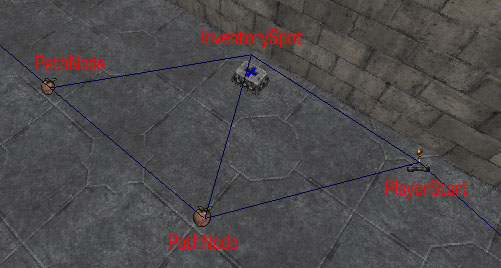

NavigationPoint (UT)
Children of this class form the bot AI navigation system. During the compilation process, two navigation points get linked by paths if one of them is in the line of view of a bot which is located at the position of the other one and the bot could go there at least in one direction. Each Pickup (UT) and PlayerStart has its own NavigationPoint. The most common NavigationPoints are the PathNodes which simply are NavigationPoints which have a texture which makes it possible to put them in a map where the PathNodes build the backbone of the maps navigation system.
See NavigationPoint for the UT200x version of this class.
See the super topic page Artificial Intelligence, and Bot Support and Bot Pathing for a technical overview.

Different types of NavigationPoint with the paths between them showing in UnrealEd |
Properties
NavigationPoint Group
- bool bNeverUseStrafing
- Shouldn't use bAdvancedTactics going to this point.
- bool bOneWayPath
- Reachspecs from this path only in the direction the path is facing. (180 degrees)
- bool bPlayerOnly
- Only players should use this path.
- int ExtraCost
- name ownerTeam
- Creature clan owning this area. (area visible from this point)
Hidden
- bool bAutoBuilt
- Placed during execution of "PATHS BUILD".
- bool bEndPoint
- Used by C++ navigation code.
- bool bEndPointOnly
- Only used as an endpoint in routing network.
- int bestPathWeight (const)
- bool bSpecialCost
- If true, navigation code will call SpecialCost function for this navigation point.
- bool bTwoWay
- Hacked here to fix CTF problems post release. (used by Botpack.AlternatePath)
- int cost
- Added cost to visit this pathnode.
- NavigationPoint nextNavigationPoint (const)
- Next NavigationPoint in the Linked List of the map's NavigationPoints.
- NavigationPoint nextOrdered (const)
- int Paths[16]
- Holds indices of paths (reachspecs) that lead from this node directly to another node. (Used by C++ Navigation code.)
- NavigationPoint previousPath (const)
- NavigationPoint prevOrdered (const)
- int PrunedPaths[16]
- Appears to hold indices of paths that are not displayed in the editor because they are not significantly more efficient than a series of shorter paths. For instance, consider three nodes – PathNode0, PathNode1, and PathNode2 – placed in a straight-line formation, with PathNode1 at the center. Although PathNode2 may be close enough that it could be directly reached from PathNode0, in practice a bot would go from PathNode0 first to PathNode1, then on to PathNode2. Thus the path from PathNode0 to PathNode1 will go into the former's Paths[] array, while the path from PathNode0 to PathNode2 will go into the PrunedPaths[] array. I'm not sure at the moment exactly how these paths are used, as opposed to how standard Paths[] are used, because there aren't any references to PrunedPaths[] in UnrealScript, except to define the array. It's only used by the C++ navigation code.
- Actor routeCache
- NavigationPoint startPath (const)
- bool taken
- Set when a creature is occupying this spot.
- int upstreamPaths[16]
- Holds indices of paths that lead to this node directly from another node. (Used by C++ navigation code.)
- int visitedWeight
- NavigationPoint VisNoReachPaths[16]
- Paths that are visible but not directly reachable.
Methods
- bool Accept (Actor Incoming, Actor Source) [event]
- Accept an actor that has teleported in. Used for random spawning and initial placement of creatures.
- describeSpec (int iSpec, out Actor Start, out Actor End, out int ReachFlags, out int Distance) [native, final]
- PlayTeleportEffect (Actor Incoming, bool bOut)
- int SpecialCost (Pawn Seeker) [event]
Known subclasses
For a list of these grouped by usage with a summary, see NavigationPoint.
- AlarmPoint
- AlternatePath
- AmbushPoint
- AssaultRandomizer
- BlockedPath
- ButtonMarker – Broken actor; don't use.
- ControlPoint
- FlagBase
- HomeBase
- InventorySpot – Automatically placed by the game; don't use.
- LiftCenter (UT)
- JumpSpot (UT)
- PainPath?
- TranslocDest
- LiftExit (UT)
- PathNode
- PatrolPoint
- PlayerStart
- QueenDest
- SpawnPoint
- Teleporter
- DelayedTeleporter (custom class)
- FavoritesTeleporter
- VisibleTeleporter?
- YawTeleporter (custom class)
- Transporter
- TriggerMarker – Broken actor; don't use.
- WarpZoneMarker – Automatically placed by the game; don't use.